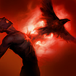

起手裝備
 增幅典籍
增幅典籍
黑焰→瑞萊→峽谷維持，先魔力與清線，再用緩速維持大絕接觸。補上爆發對局用中婭替換雅瑪蘭的明確選項；重創／破盾不能無條件移除唯一百分比穿透，改依敵方魔防決定替換峽谷或虛空。


五件成裝與鞋子分開列示；起手與核心是購買路線，不是額外佔用的成裝欄位。鞋子完成時機仍依對線壓力與回城金錢調整。


征服者與戰鬥狂熱支援持續作戰，傳奇疾速協助技能循環；骨甲仍用於吃近身爆發。沒有對手留在吸取範圍時，不把大絕當永久續航。


斯溫：閃現避開關鍵技能，鬼步延長追擊與拉打，配合技能循環而非無視隊友單獨深追。
加點優先：Q > E > W
維持 Q>E>W；一技短距離多道命中是傷害核心，先拉回再縮距離。二段大絕可依技能規則重複使用，不用舊版一次引爆就結束的理解。

取得靈魂碎片時治療自己並永久提高最大生命，治療與成長效果會讓斯溫在持久戰中逐漸變得更難處理。
有後續版本調整的項目以較新數值為準；未列出者不代表完整技能成長表。
向前釋放多道魔法彈，距離越近能讓同一目標承受越多道傷害，是拉回後的主要爆發技能。
在遠距區域召喚魔眼，延遲後造成魔法傷害、緩速與揭露；命中英雄可取得靈魂碎片。
魔爪向前飛出後折返，命中敵人時造成控制；可再次施放把目標拉向斯溫並取得靈魂碎片。
有後續版本調整的項目以較新數值為準；未列出者不代表完整技能成長表。
化身惡魔並持續汲取周圍敵人的生命；只要持續吸取敵方英雄即可維持型態，期間可重複施放魔燄造成範圍傷害與緩速。 7.2e：每秒傷害：10/25/40 +15%魔攻→15/25/35 +6%魔攻；每秒治療：20/30/40 +20%魔攻→15/30/45 +10%魔攻。
三技折返控制後再拉回接近距離一技；大絕需接觸敵方英雄才能維持，不能對空無限站場。
一段3技 → 二段3技拉回 → 2技 → 1技
三技命中後拉回並疊加魂屑，二技封住落點，再近距離用一技打滿傷害。
4技 → 3技 → 1技 → 2技 → 二段4技
大絕開啟後留在多人範圍內吸取生命，敵人血量降低時再引爆。
2技 → 3技 → 拉回 → 1技
先用二技逼迫走位，再用三技抓住退路，拉回後貼近施放一技。
前期用 E 拉回配 Q 打短換血，注意魔力不要為了消耗清空。
黑焰火炬→瑞萊的冰晶節杖→峽谷製造者支援長時間站場；先以瑞萊留人再考慮延長大絕。對方爆發能一輪擊殺時，中婭可替代雅瑪蘭，不必為等後期雙防硬扛。
後期站在前排與後排之間，利用控制保護主 C 同時吸多名敵人續戰。
菲歐拉和伊瑞莉雅可進出大絕範圍，拉回命中才延長交戰，鬼步用來保持接觸距離。
對局名單是機制與分路判斷，不代表固定勝率；需同時看雙方熟練度、兵線與陣容。
本站巴龍路 B：一技近距離傷害、拉回及大絕續戰可懲罰缺位移前排；但射程短、被風箏或重創時很難維持大絕，不以中路或輔助評級替代單線風險。
黑焰→瑞萊→峽谷維持，先魔力與清線，再用緩速維持大絕接觸。補上爆發對局用中婭替換雅瑪蘭的明確選項；重創／破盾不能無條件移除唯一百分比穿透，改依敵方魔防決定替換峽谷或虛空。
對局名單是技能與換血條件的提示，不是7.3b勝率排名。先看敵方突進、關鍵防禦技能與兵線；裝備成形後重新評估，不能把前期有利當整場必勝。
以下情境替換以本頁7.3b五件成裝為基準。同一格多項建議擇一；鞋子由二級升三級，主動裝另占成裝格。
高
觸發：需要更高魔法穿透時，替換原百分比穿透裝，不同時堆死墓與虛空。
目前配置已提供部分魔防多所需功能；先按威脅調整購買順序，不為分類名稱強行多買一件。
主動裝占成裝格；鞋子更換時整條升級路線一起更換。
高
觸發：主動無敵幫助等待隊友及第二輪技能，使用時機需配合敵方爆發。
雅瑪蘭守護像 → 中婭沙漏
敵方一輪爆發會在雙防成形前擊殺你時，將雅瑪蘭守護像換中婭沙漏；主動凝滯必須預判施放，結束後仍需隊友接應。
敵方一輪爆發會在雙防成形前擊殺你時，將雅瑪蘭守護像換中婭沙漏；主動凝滯必須預判施放，結束後仍需隊友接應。
主動裝占成裝格；鞋子更換時整條升級路線一起更換。
高
觸發：先遺忘寶珠過渡，必要時替換末件；重創不因多人裝備而相加。
峽谷製造者 → 黑魔禁書
敵方回復已影響集火且你能持續命中目標時，以黑魔禁書替換峽谷製造者；保留虛空以處理已成形魔防，代價是失去峽谷的續戰收益。若敵方幾乎沒有魔防，才另考慮替換虛空，不能把兩個方案同時套用。
敵方回復已影響集火且你能持續命中目標時，以黑魔禁書替換峽谷製造者；保留虛空以處理已成形魔防，代價是失去峽谷的續戰收益。若敵方幾乎沒有魔防，才另考慮替換虛空，不能把兩個方案同時套用。
主動裝占成裝格；鞋子更換時整條升級路線一起更換。
高
觸發：護盾持續妨礙集火時，以破盾功能替換末件，不把護盾誤當治療。
峽谷製造者 → 水仙三叉戟
敵方護盾已影響集火且你能持續命中目標時，以水仙三叉戟替換峽谷製造者；保留虛空以處理已成形魔防，代價是失去峽谷的續戰收益。若敵方幾乎沒有魔防，才另考慮替換虛空，不能把兩個方案同時套用。
敵方護盾已影響集火且你能持續命中目標時，以水仙三叉戟替換峽谷製造者；保留虛空以處理已成形魔防，代價是失去峽谷的續戰收益。若敵方幾乎沒有魔防，才另考慮替換虛空，不能把兩個方案同時套用。
主動裝占成裝格；鞋子更換時整條升級路線一起更換。
高
觸發：二級鞋改水星之靴，三級鞋對應鎖鏈軍靴；韌性不縮短擊飛。
魔力之靴 → 水星之靴
魔法傷害及可縮短的控制占主導時，整條改水星之靴→鎖鏈軍靴；韌性不能縮短擊飛。
魔法傷害及可縮短的控制占主導時，整條改水星之靴→鎖鏈軍靴；韌性不能縮短擊飛。
主動裝占成裝格；鞋子更換時整條升級路線一起更換。
本頁校正版本：7.3b；校正日期：2026-10-15。
參考來源標示版本：7.3b公告；同分路配裝參考為7.3基準
Tier、出裝、符文與對局是本站編輯建議，不是官方推薦或已驗證台服勝率。v118延續同日v117的逐路複核，針對來源缺口及數值衝突再核對；未宣稱所有技能已在手機內逐級實測。
評級理由：本站巴龍路 B：一技近距離傷害、拉回及大絕續戰可懲罰缺位移前排；但射程短、被風箏或重創時很難維持大絕，不以中路或輔助評級替代單線風險。
WildRiftFire 參考攻略 ↗ · WildRiftFire 參考攻略 ↗ · Riot 官方資料 ↗ · wildriftcore.com ↗
本站巴龍路 B：一技近距離傷害、拉回及大絕續戰可懲罰缺位移前排；但射程短、被風箏或重創時很難維持大絕，不以中路或輔助評級替代單線風險。
黑焰→瑞萊→峽谷維持，先魔力與清線，再用緩速維持大絕接觸。補上爆發對局用中婭替換雅瑪蘭的明確選項；重創／破盾不能無條件移除唯一百分比穿透，改依敵方魔防決定替換峽谷或虛空。
已補得明確Baron Lane配裝段落；該站頁首更新到7.3b，但配裝資料標示為7.3基準，部分情境模板有錯置。只採可核對的同路核心思路，再以本站現行裝備及官方7.3b差異作編輯判斷；不引用其泛用Tier、勝率或錯置的換裝模板。
維持 Q>E>W；一技短距離多道命中是傷害核心，先拉回再縮距離。二段大絕可依技能規則重複使用，不用舊版一次引爆就結束的理解。
歷史資料有後續調整時，以較新版本數值為準。
| 項目 | 調整前 | 調整後 |
|---|---|---|
| 回復生命 | 3%–4.5%（隨等級）＋0.5%魔攻 | 4.5%–6%（隨等級）＋0.2%魔攻 |
| 項目 | 調整前 | 調整後 |
|---|---|---|
| 重複傷害魔攻係數 | 25% | 40% |